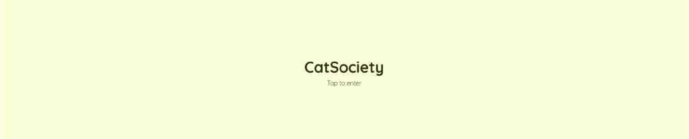
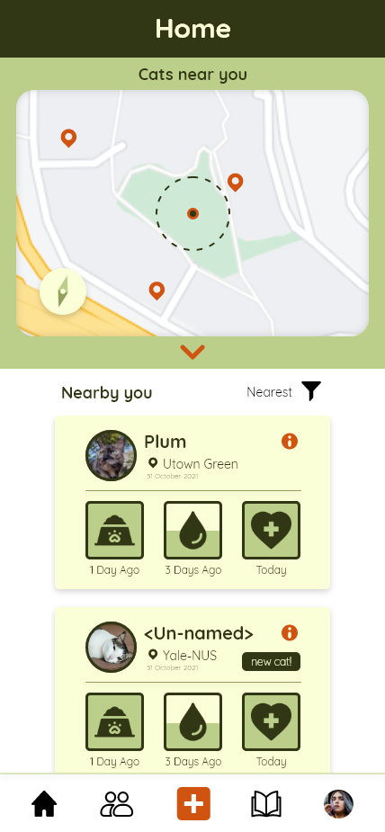

CatSociety
 There is often a disconnect between different groups of community caretakers for different cats and welfare organisations that work to manage the cat population in Singapore. Without support, cat caretakers may often be left on their own to ensure these cats are taken care of, often worrying when they go missing, wondering if they have been fed, or how to care for an injured or sick cat. With this design project, I hope to create a solution that can increase support for these groups, look out for the well-being of these cats, and increase awareness.
CatSociety aims to help bring the community cat caretaking society together in Singapore. As fragmented as it is in Singapore, there is a shared love for the care of these cats as they help bring communities together. As such, this app helps to increase coordination efforts and shed light on the efforts put in by these caretakers. In addition, this app also aims to help empower users to be more confident in caring and looking after cats and give the community a tool to help prevent further spates of cat abuse in Singapore.
This project gave me great insight on the design process and allowed me to explore different areas of gathering data, research, evaluation, and conceptualisation. This was an exciting project as it tackled an issue that I could relate to and that had a strong impact for. It also allowed me to further analyse the impacts of creating accessible interaction design and think more broadly about the needs of the user and how this can impact them.
Check out CatSociety on Adobe XD Prototype